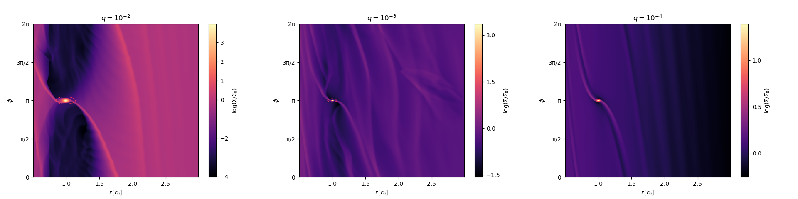

About Me

My name is Michael Rizzo Smith and I am currently a first-year graduate student at Vanderbilt University in the Astrophysics PhD program.
I am originally from New Jersey and graduated from Stony Brook University in New York in May 2021 with a BS in Physics and Astronomy & Planetary Science.
After graduation, I worked full-time at The Ohio State University for two years as a research technician and data analyst for the ASAS-SN group. At OSU I researched core-collapse supernovae with the Large Binocular Telescope.
Research Interests: Computational Astrophysics, Binary Black Hole Evolution, Accretion Disk Physics.
Fun Fact: I have a 4 year old husky named Kai that loves to go on adventures with me (pictured above)!
Research

I am currently working with Kelly Holley-Bocklemann and Andrea Derdzinski on hydrodynamic simulations of massive black hole binaries embededd in gaseous accretion disks using DISCO.
Check out some of my work here (ADS List) or here (ORCID)!
Some Recent Publications
A planetary collision afterglow and transit of the resultant debris cloud (Journal Site)
(Co-Author)
Constraints on pre-SN outbursts from the progenitor of SN 2023ixf using the Large Binocular Telescope (Journal Site)
(Co-Author)
Late Time Optical Evolution of Type II Supernovae: Detection of Normal Stellar Winds (Journal Site)
(First-Author)
Education
Vanderbilt University -- Nashville, TN 2023 - 2028
PhD in Astrophysics
Stony Brook University -- Stony Brook, NY 2017 - 2021
Bachelor of Science in Physics and 2nd Major in Astronomy & Planetary Science
Magna Cum Laude
Honors Degree in Physics
Teaching Experience
Graduate Teaching Assistant for ASTR 1010L: Into to Astronomy Lab.
Undergraduate Teaching Assistant for a sophomore level Astrophysics class.
Paid Tutor for Introductory Level College Physics Courses where I create lessons, offer extra practice, and additional resources to help the student succeed.
High school level Physics and Math tutor.
Contact
Email: michael.smith.4@vanderbilt.edu
michael.josmith21@gmail.com